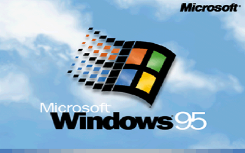
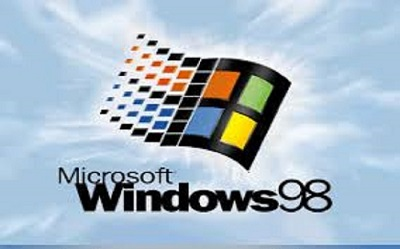
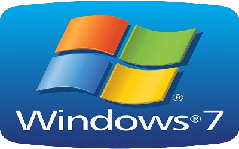
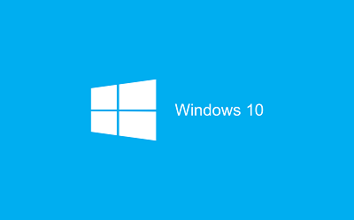

|  |
O Windows 95 representou um grande avanço tecnológico para a Microsoft, especialmente com a introdução do menu Start (Iniciar), que se tornou uma característica marcante e duradoura do sistema operacional. Para promover essa inovação, a Microsoft utilizou a música “Start me Up” dos Rolling Stones como tema. O Windows 95 foi um grande sucesso comercial e técnico, estabelecendo um recorde ao vender 7 milhões de cópias nas primeiras cinco semanas após o lançamento. A expectativa foi tão alta que pessoas fizeram fila nas lojas no dia do lançamento e até no dia anterior. Em termos técnicos, o Windows 95 foi projetado para suportar uma arquitetura de 32 bits, o que trouxe melhorias significativas em desempenho e capacidade em comparação com seus predecessores. No entanto, para garantir compatibilidade com aplicações e sistemas mais antigos baseados em 16 bits, algumas funções do sistema ainda operavam com essa arquitetura. Isso permitiu uma transição mais suave para os usuários e desenvolvedores, enquanto aproveitava as vantagens das novas tecnologias de 32 bits. |
|
A evolução do Windows começou com o Windows 1.0, lançado em 1985, que oferecia uma interface gráfica básica sobre o MS-DOS. O Windows 3.0, de 1990, trouxe uma interface mais avançada e suporte para multitarefa, marcando um sucesso comercial. Em 1995, o Windows 95 introduziu o icônico menu Start e suporte nativo para 32 bits, representando um grande avanço tecnológico e comercial. O Windows 98, lançado em 1998, aprimorou o suporte a hardware e internet, enquanto o Windows XP, de 2001, apresentou uma interface moderna e maior estabilidade. O Windows Vista, de 2007, trouxe a interface Aero e melhorias na segurança, mas enfrentou críticas por desempenho e compatibilidade. |
 |
|  |
O Windows 7, lançado em 2009, foi bem recebido por suas melhorias em desempenho e estabilidade. O Windows 8, de 2012, introduziu uma nova interface focada em telas de toque e a loja de aplicativos, mas foi criticado por sua interface radicalmente diferente. O Windows 8.1, de 2013, ajustou a interface e reintroduziu o botão Start em uma forma reduzida. |
|
O Windows 10, lançado em 2015, combinou elementos do Windows 7 e 8, trazendo de volta o menu Start completo e introduzindo o assistente pessoal Cortana, além de atualizações regulares. Finalmente, o Windows 11, lançado em 2021, apresentou uma nova interface centrada, maior integração com serviços de nuvem e foco em produtividade e colaboração, adaptando-se às necessidades de hardware moderno. |
 |